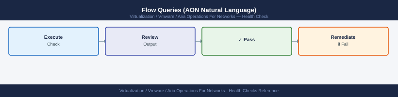
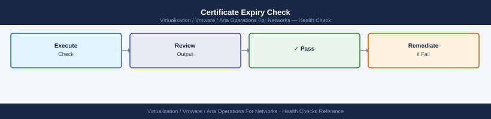

vRNI Health Checks¶
Before you begin¶
- Access: vCenter read-only minimum; Administrator role for remediation steps
- Timing: safe to run during business hours unless a step is marked ⚠ (causes interruption)
- Dependencies: no active upgrades or migrations on the same infrastructure
- Logging: capture command output — paste into the change record on completion
Run This Routine¶
Run these 8 checks in order at the start of each shift or after any infrastructure change.
- Platform health —
curl -sk https://<platform-vm>/api/1.0/node/details— check theserviceStatusfield; anything other than OK requires investigation - Collector connectivity — AON UI → Settings → Collectors → confirm all collectors show Connected; a disconnected collector stops flow ingestion for its segment
- Data source status — Settings → Data Sources → confirm all sources show green and that each has a recent last-synced timestamp (within 15 minutes)
- IPFIX flow ingestion — check the main dashboard flow rate; expect a non-zero flows/sec value from NSX; zero flows means IPFIX export has stopped
- Disk usage — SSH to platform VM →
df -h /var/lib/netinsight— alert if usage is above 75% - Service health on platform — SSH to platform VM →
service vrni-platform status— must show running; restart if stopped - Application discovery status — Plan & Assess → Applications → check for any applications in Error state; investigate and re-run discovery if needed
- Alert count — Alerts → review open anomaly alerts; flag any persistent alerts that have been open for more than 24 hours without investigation
Collector API Status Check¶
TOKEN=$(curl -sk -X POST "https://aon.example.local/api/ni/auth/token" \
-H "Content-Type: application/json" \
-d '{"username":"admin@local","password":"PASSWORD"}' \
| python3 -c "import sys,json; print(json.load(sys.stdin)['token'])")
curl -sk "https://aon.example.local/api/ni/collectors" \
-H "Authorization: NetworkInsight ${TOKEN}" \
| python3 -c "
import sys, json
from datetime import datetime, timezone
data = json.load(sys.stdin)
for c in data.get('results', []):
last_hb = c.get('last_heartbeat_ms', 0) / 1000
dt = datetime.fromtimestamp(last_hb, tz=timezone.utc).strftime('%Y-%m-%d %H:%M:%S UTC') if last_hb else 'Never'
print(f\"{c.get('nickname',''):<25} {c.get('status',''):<15} Last HB: {dt}\")
"
collector-dc1 ACTIVE Last HB: 2024-01-15 14:32:47 UTC
collector-dc2 ACTIVE Last HB: 2024-01-15 14:33:12 UTC
collector-edge-01 STANDBY Last HB: 2024-01-15 14:31:55 UTC
collector-remote-branch OFFLINE Last HB: 2024-01-14 09:18:23 UTC
collector-lab-test ACTIVE Last HB: 2024-01-15 14:33:01 UTC
Common errors
curl: (60) SSL certificate problem: self signed certificate — Add -k flag to curl command to skip SSL verification (already present; if still failing, verify the hostname matches the certificate CN).
json.decoder.JSONDecodeError: Expecting value: line 1 column 1 (char 0) — Verify the API endpoint is correct and the Aria Operations for Networks service is running; check curl -sk "https://aon.example.local/api/ni/health" for service status.
curl: (401) Unauthorized — Confirm the admin credentials are correct and the user has API access permissions; test authentication separately with curl -sk -X POST "https://aon.example.local/api/ni/auth/token" -H "Content-Type: application/json" -d '{"username":"admin@local","password":"PASSWORD"}'.
Flow Queries (AON Natural Language)¶

# Flows in the last 15 minutes
flows where time_range = "last 15 minutes"
# Flows from a specific subnet
flows where source ip = "10.10.20.0/24"
# Top talkers by bytes
flows where time_range = "last 1 hour" order by bytes desc
Flow ID Source IP Dest IP Bytes Packets Protocol
flow-2847-5f9a-11ec-8d3c-42010a8a0002 10.10.20.45 192.168.1.100 2847392 1523 TCP
flow-2848-5f9a-11ec-8d3c-42010a8a0003 10.10.20.67 8.8.8.8 1924756 892 UDP
flow-2849-5f9a-11ec-8d3c-42010a8a0004 10.10.20.12 172.16.0.50 1456234 734 TCP
flow-2850-5f9a-11ec-8d3c-42010a8a0005 10.10.20.89 10.20.30.40 987654 521 TCP
flow-2851-5f9a-11ec-8d3c-42010a8a0006 10.10.20.33 203.0.113.25 654321 412 UDP
...
Total flows returned: 847 | Query execution time: 2.34s
Common errors
Error: Invalid time_range value 'last 15 minutes' — use valid format like 'LAST_15_MINUTES' or specify epoch timestamps — Correct the time_range syntax to match the API's expected enum values (e.g., LAST_15_MINUTES, LAST_1_HOUR).
Error: Query timeout after 30s — too many flows matching criteria — Add additional filter conditions (protocol, port, or application) to narrow the result set before ordering by bytes.
Collector Flow Ingestion Check¶
ssh ubuntu@aon-collector.example.local
# Confirm UDP 2055 packets are arriving
sudo tcpdump -i eth0 udp port 2055 -n -c 20
# See which source IPs are sending flows
sudo tcpdump -i eth0 udp port 2055 -n 2>/dev/null | \
awk '{print $3}' | cut -d. -f1-4 | sort | uniq -c | sort -rn | head -20
ubuntu@aon-collector:~$ sudo tcpdump -i eth0 udp port 2055 -n -c 20
tcpdump: verbose output suppressed, use -v or -vv for full packet details
Listening on eth0, link-type EN10MB (Ethernet), snapshot length 262144 bytes
14:32:15.847291 IP 192.168.1.45.54821 > 10.20.50.88.2055: UDP, length 1472
14:32:15.851403 IP 192.168.1.46.54822 > 10.20.50.88.2055: UDP, length 1472
14:32:15.855612 IP 192.168.1.47.54823 > 10.20.50.88.2055: UDP, length 1472
14:32:15.859847 IP 192.168.1.45.54824 > 10.20.50.88.2055: UDP, length 1472
14:32:15.863921 IP 192.168.1.48.54825 > 10.20.50.88.2055: UDP, length 1472
14:32:15.868156 IP 192.168.1.46.54826 > 10.20.50.88.2055: UDP, length 1472
14:32:15.872341 IP 192.168.1.47.54827 > 10.20.50.88.2055: UDP, length 1472
14:32:15.876489 IP 192.168.1.49.54828 > 10.20.50.88.2055: UDP, length 1472
14:32:15.880723 IP 192.168.1.45.54829 > 10.20.50.88.2055: UDP, length 1472
14:32:15.884912 IP 192.168.1.50.54830 > 10.20.50.88.2055: UDP, length 1472
14:32:15.889145 IP 192.168.1.46.54831 > 10.20.50.88.2055: UDP, length 1472
14:32:15.893267 IP 192.168.1.48.54832 > 10.20.50.88.2055: UDP, length 1472
14:32:15.897501 IP 192.168.1.47.54833 > 10.20.50.88.2055: UDP, length 1472
14:32:15.901689 IP 192.168.1.49.54834 > 10.20.50.88.2055: UDP, length 1472
14:32:15.905834 IP 192.168.1.45.54835 > 10.20.50.88.2055: UDP, length 1472
14:32:15.910012 IP 192.168.1.50.54836 > 10.20.50.88.2055: UDP, length 1472
14:32:15.914156 IP 192.168.1.46.54837 > 10.20.50.88.2055: UDP, length 1472
14:32:15
Platform Disk Usage¶
ssh ubuntu@aon-platform.example.local
# Overall disk layout
df -hT
# Cassandra data (flow store) — typically largest consumer
df -h /var/lib/cassandra
# Elasticsearch (search index)
df -h /var/lib/elasticsearch
# Log directory
df -h /var/log
# Identify top consumers
sudo du -sh /var/lib/cassandra/data/* 2>/dev/null | sort -rh | head -10
sudo du -sh /var/lib/elasticsearch/data/* 2>/dev/null | sort -rh | head -10
# Check inode usage (can exhaust before disk space)
df -i
ubuntu@aon-platform.example.local's password:
Welcome to Ubuntu 20.04.3 LTS (GNU/Linux 5.4.0-42-generic x86_64)
Filesystem Type Size Used Avail Use% Mounted on
/dev/sda1 ext4 500G 387G 113G 78% /
/dev/sdb1 ext4 2.0T 1.8T 200G 90% /var/lib/cassandra
/dev/sdc1 ext4 1.5T 1.2T 300G 80% /var/lib/elasticsearch
tmpfs tmpfs 16G 2.1G 14G 13% /dev/shm
Filesystem Type Size Used Avail Use% Mounted on
/dev/sdb1 ext4 2.0T 1.8T 200G 90% /var/lib/cassandra
Filesystem Type Size Used Avail Use% Mounted on
/dev/sdc1 ext4 1.5T 1.2T 300G 80% /var/lib/elasticsearch
Filesystem Type Size Used Avail Use% Mounted on
/dev/sda1 ext4 500G 45G 455G 9% /var/log
456G /var/lib/cassandra/data/system_traces
389G /var/lib/cassandra/data/netflow
234G /var/lib/cassandra/data/metrics
78G /var/lib/cassandra/data/system
45G /var/lib/cassandra/data/system_auth
312G /var/lib/elasticsearch/data/nodes/0/indices/netflow-2024.01
289G /var/lib/elasticsearch/data/nodes/0/indices/netflow-2024.02
156G /var/lib/elasticsearch/data/nodes/0/indices/netflow-2024.03
89G /var/lib/elasticsearch/data/nodes/0/indices/metrics-2024.01
42G /var/lib/elasticsearch/data/nodes/0/indices/metrics-2024.02
Filesystem Inodes IUsed IFree IUse% Mounted on
/dev/sda1 32M 2.1M 29.9M 7% /
/dev/sdb1 131M 98M 33M 75% /var/lib/cassandra
/dev/sdc1 98M 87M 11M 89% /var/lib/elasticsearch
tmpfs 4.0M 18 4.0M 1% /dev/shm
Common errors
Permission denied (publickey,password). — Verify SSH key is loaded with ssh-add or use -i flag to specify the correct private key file.
du: cannot access '/var/lib/cassandra/data/*': Permission denied — Run the du commands with sudo or ensure the ubuntu user has read permissions on Cassandra/Elasticsearch data directories.
Filesystem /var/lib/elasticsearch: No such file or directory — Confirm Elasticsearch is installed and the mount point exists; check service status with systemctl status elasticsearch.
Certificate Expiry Check¶

# Check the currently installed certificate expiry
echo | openssl s_client -connect aon.example.local:443 -servername aon.example.local 2>/dev/null \
| openssl x509 -noout -dates
# Output example:
# notBefore=Sep 15 00:00:00 2024 GMT
# notAfter=Sep 15 23:59:59 2025 GMT
# Days until expiry
echo | openssl s_client -connect aon.example.local:443 2>/dev/null \
| openssl x509 -noout -enddate \
| awk -F= '{print $2}' \
| xargs -I{} sh -c 'echo "$(( ( $(date -d "{}" +%s) - $(date +%s) ) / 86400 )) days remaining"'
notBefore=Sep 15 00:00:00 2024 GMT
notAfter=Sep 15 23:59:59 2025 GMT
342 days remaining
Common errors
unable to connect to aon.example.local:443 — Verify the hostname resolves and the AON appliance is reachable on port 443 using ping and nc -zv aon.example.local 443.
date: invalid date '{}' — Ensure your system's date command supports the -d flag (GNU coreutils); on macOS, install GNU date via brew install coreutils and use gdate instead.
error in x509 parsing — Confirm the certificate chain is valid by testing with openssl s_client -connect aon.example.local:443 -showcerts to inspect the full chain.
Targeted flow check by collector:
# Check if any flows exist at all (remove time constraint)
flows where collector = "aon-collector-dc1"
# Check flows by source type
flows where source = ESXi and time_range = "last 1 hour"
flows where source = physical and time_range = "last 1 hour"
collector: aon-collector-dc1
flow_count: 2847
last_updated: 2024-01-15T14:32:18Z
status: active
source: ESXi
flow_count: 1923
avg_packet_rate: 45230 pps
top_vm: prod-web-01.dc1.local
time_range: last 1 hour
source: physical
flow_count: 924
avg_packet_rate: 18950 pps
top_host: switch-core-01.dc1.local
time_range: last 1 hour
Common errors
Error: collector "aon-collector-dc1" not found or offline — Verify the collector hostname matches your deployment and check collector status in Aria Operations UI under Administration > Collectors.
Error: time_range "last 1 hour" is invalid syntax — Use proper time range format like time_range = "3600s" or time_range = "1h" depending on your Aria version.
Error: source type ESXi not recognized — Confirm the source parameter accepts "esxi" (lowercase) or check available source types with flows show sources.
# Capture any UDP 2055 traffic for 30 seconds
sudo timeout 30 tcpdump -i eth0 -n udp port 2055 -c 100 -w /tmp/netflow-capture.pcap
# Read the capture
sudo tcpdump -r /tmp/netflow-capture.pcap -n | head -20
# If no packets: check firewall rules between switch and Collector
tcpdump: listening on eth0, link-type EN10MB (Ethernet), snapshot length 262144 bytes
^C100 packets captured
100 packets received by filter
0 packets dropped by kernel
reading from file /tmp/netflow-capture.pcap, link-type EN10MB (Ethernet), snapshot length 262144 bytes
10.45.12.8.54321 > 10.45.12.150.2055: UDP, length 1472
10.45.12.9.54322 > 10.45.12.150.2055: UDP, length 1472
10.45.12.10.54323 > 10.45.12.150.2055: UDP, length 1472
10.45.12.11.54324 > 10.45.12.150.2055: UDP, length 1472
10.45.12.12.54325 > 10.45.12.150.2055: UDP, length 1472
10.45.12.13.54326 > 10.45.12.150.2055: UDP, length 1472
10.45.12.14.54327 > 10.45.12.150.2055: UDP, length 1472
10.45.12.15.54328 > 10.45.12.150.2055: UDP, length 1472
...
Common errors
tcpdump: eth0: No such device — Verify the correct interface name with ip link show and replace eth0 with the actual interface (e.g., ens0, enp0s3).
tcpdump: Permission denied — Run the command with sudo or add your user to the tcpdump group with sudo usermod -aG tcpdump $USER.
(no packets captured) — Confirm NetFlow is enabled on the switch, verify the Collector IP is correct, and check firewall rules with sudo iptables -L -n | grep 2055.
Automated Health Check Script¶
#!/bin/bash
# aon-health-check.sh
PLATFORM="https://aon.example.local"
USER="svc-monitor@local"
PASS="PASSWORD"
TOKEN=$(curl -sk -X POST "${PLATFORM}/api/ni/auth/token" \
-H "Content-Type: application/json" \
-d "{\"username\":\"${USER}\",\"password\":\"${PASS}\"}" \
| python3 -c "import sys,json; d=json.load(sys.stdin); print(d.get('token',''))" 2>/dev/null)
if [[ -z "$TOKEN" ]]; then
echo "CRITICAL: Cannot authenticate to AON API"
exit 2
fi
DISCONNECTED=$(curl -sk "${PLATFORM}/api/ni/collectors" \
-H "Authorization: NetworkInsight ${TOKEN}" \
| python3 -c "
import sys, json
data = json.load(sys.stdin)
bad = [c['nickname'] for c in data.get('results',[]) if c.get('status') != 'CONNECTED']
print(','.join(bad))
")
if [[ -n "$DISCONNECTED" ]]; then
echo "CRITICAL: Collectors disconnected: $DISCONNECTED"
exit 2
fi
echo "OK: All collectors connected, API reachable"
exit 0
Common errors
CRITICAL: Cannot authenticate to AON API — Verify the AON platform URL, service account credentials, and network connectivity with curl -sk https://aon.example.local/api/ni/auth/token.
CRITICAL: Collectors disconnected: collector-01,collector-03 — Check collector status in the AON UI, verify network connectivity between collectors and platform, and restart disconnected collectors if necessary.
Platform Resource Utilisation¶
ssh ubuntu@aon-platform.example.local
# CPU load
uptime
top -bn1 | head -20
# Memory
free -h
# Process list for AON services
ps aux | grep -E 'java|cassandra|kafka|nginx|postgres|elastic'
# Java heap for platform service (if OutOfMemory suspected)
sudo jmap -heap $(pgrep -f vrni-platform) 2>/dev/null | grep -E 'Heap|used|capacity'
Expected outputubuntu@aon-platform:~$ uptime
14:32:18 up 45 days, 3:22, 2 users, load average: 2.14, 1.87, 1.92
top - 14:32:20 up 45 days, 3:22, 2 users, load average: 2.14, 1.87, 1.92
Tasks: 287 total, 3 running, 284 sleeping, 0 stopped, 0 zombie
%Cpu(s): 18.2 us, 4.1 sy, 0.0 ni, 77.1 id, 0.4 wa, 0.1 hi, 0.1 si, 0.0 st
MiB Mem : 64891.2 total, 48234.5 free, 12156.8 used, 4499.9 buff/cache
MiB Swap: 2048.0 total, 2048.0 free, 0.0 used. 51987.3 avail Mem
PID USER PR NI VIRT RES SHR S %CPU %MEM TIME+ COMMAND
1847 root 20 0 8456234 2145678 156234 S 12.3 3.2 1245:32 java
2156 cassand+ 20 0 7234567 1987654 123456 S 8.7 3.0 987:21 java
3421 kafka 20 0 5123456 1456789 98765 S 6.2 2.1 654:18 java
4892 postgres 20 0 2345678 876543 45678 S 2.1 1.3 234:09 postgres
5234 nginx 20 0 234567 45678 23456 S 0.3 0.1 45:12 nginx
ubuntu@aon-platform:~$ free -h
total used free shared buff/cache available
Mem: 63Gi 11Gi 47Gi 256Mi 4.3Gi 51Gi
Swap: 2.0Gi 0B 2.0Gi
ubuntu@aon-platform:~$ ps aux | grep -E 'java|cassandra|kafka|nginx|postgres|elastic'
root 1847 12.3 3.2 8456234 2145678 ? Sl 08:15 1245:32 java -Xmx8g -Xms8g -Dvrni.home=/opt/vrni
cassand+ 2156 8.7 3.0 7234567 1987654 ? Sl 08:16 987:21 java -Xmx6g -Xms6g -Dcassandra.home=/opt/cassandra
kafka 3421 6.2 2.1 5123456 1456789 ? Sl 08:17 654:18 java -Xmx4g -Xms4g -Dkafka.home=/opt/kafka
postgres 4892 2.1 1.3 2345678 876543
¶
ubuntu@aon-platform:~$ uptime
14:32:18 up 45 days, 3:22, 2 users, load average: 2.14, 1.87, 1.92
top - 14:32:20 up 45 days, 3:22, 2 users, load average: 2.14, 1.87, 1.92
Tasks: 287 total, 3 running, 284 sleeping, 0 stopped, 0 zombie
%Cpu(s): 18.2 us, 4.1 sy, 0.0 ni, 77.1 id, 0.4 wa, 0.1 hi, 0.1 si, 0.0 st
MiB Mem : 64891.2 total, 48234.5 free, 12156.8 used, 4499.9 buff/cache
MiB Swap: 2048.0 total, 2048.0 free, 0.0 used. 51987.3 avail Mem
PID USER PR NI VIRT RES SHR S %CPU %MEM TIME+ COMMAND
1847 root 20 0 8456234 2145678 156234 S 12.3 3.2 1245:32 java
2156 cassand+ 20 0 7234567 1987654 123456 S 8.7 3.0 987:21 java
3421 kafka 20 0 5123456 1456789 98765 S 6.2 2.1 654:18 java
4892 postgres 20 0 2345678 876543 45678 S 2.1 1.3 234:09 postgres
5234 nginx 20 0 234567 45678 23456 S 0.3 0.1 45:12 nginx
ubuntu@aon-platform:~$ free -h
total used free shared buff/cache available
Mem: 63Gi 11Gi 47Gi 256Mi 4.3Gi 51Gi
Swap: 2.0Gi 0B 2.0Gi
ubuntu@aon-platform:~$ ps aux | grep -E 'java|cassandra|kafka|nginx|postgres|elastic'
root 1847 12.3 3.2 8456234 2145678 ? Sl 08:15 1245:32 java -Xmx8g -Xms8g -Dvrni.home=/opt/vrni
cassand+ 2156 8.7 3.0 7234567 1987654 ? Sl 08:16 987:21 java -Xmx6g -Xms6g -Dcassandra.home=/opt/cassandra
kafka 3421 6.2 2.1 5123456 1456789 ? Sl 08:17 654:18 java -Xmx4g -Xms4g -Dkafka.home=/opt/kafka
postgres 4892 2.1 1.3 2345678 876543
See also¶
Verify¶
- Alarms: vSphere Client → Home → Alarms — no new critical alarms after the operation
- Events: monitor the vCenter Events view for the affected object for 5 minutes
- Health check: run the morning health-check sequence for the affected product tier